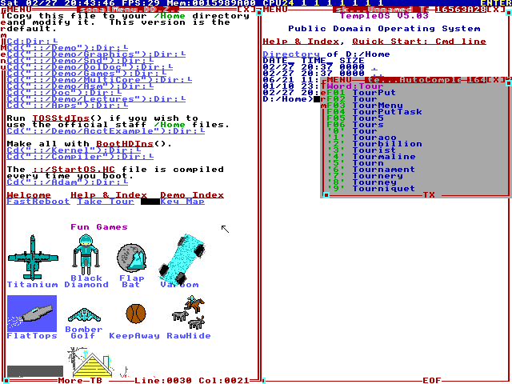

TempleOS

{kind=link}
TempleOS is the obvious ancestor of a project shaped like this one, and the parts it got right are the parts this system also relies on. Terry Davis wrote it alone over more than a decade: a 64-bit operating system in ring 0, in one address space, with its own compiler, its own graphics and its own language, and it worked.
The inheritance
- Ring 0, always. No user/kernel split and no syscall instruction, in either system.
- One identity-mapped address space, where everything can reach everything. The paging code here says so directly: physical equals virtual, one set of page tables for the whole machine, no higher half, no per-process tables and no TLB shootdown to design.
- No isolation, arrived at deliberately, with the costs written down where a reader will find them.
- An aesthetic committed to on purpose. TempleOS chose 640×480 and sixteen colours and never apologised for it; this one chooses amber on black and Windows 3.1 chrome and does not either.
- One person, from scratch, with the tools included in the thing being built.
Where the two diverge
TempleOS had HolyC serving as compiler, shell and system language simultaneously, which is a genuinely radical unification — the command line was the language, and the language was compiled. GLaDOS has a small interpreted language in the shell, but the system is Rust and stays Rust, and the interpreter is a guest in it.
The organising question is different too. TempleOS was built around one person's particular conviction about what a computer should be. This is built around a narrower technical question: what changes when a language model is a kernel primitive and not a userspace process? That is answerable by measurement, which is a different sort of project even where the architecture rhymes.
What it got right
That the boundary between kernel and user is a choice and not a law of nature, and that removing it makes some things genuinely simpler instead of merely more dangerous. A function call is a function call. There is no marshalling, no permission check on the way through, no context switch and no ABI that has to stay stable across a release.
For a system in which a model reaches for kernel functions constantly, that stops being a philosophical position and becomes an engineering one. The identity map, the single heap and the absence of a trap gate are all load-bearing here for the same reasons they were load-bearing there, and the null-page fault guard is the one deliberate exception in both.
The parts that turned out to be practical, not just philosophical
Three specific things fall out of the single-address-space choice, and each one saved real work here.
Identity mapping means a heap pointer is a DMA address. The NVMe driver and both network drivers hand device controllers pointers straight out of the allocator, with no IOMMU configuration, no address translation and no bounce buffers anywhere. A conventional kernel spends a meaningful amount of code on that translation layer; here it does not exist to be got wrong.
The context switch is six callee-saved registers and a stack pointer. There is no privilege transition, no reload of the ring-0 stack pointer in the task state segment, no page-table swap and no TLB flush. The caller-saved registers need no handling at all, because the calling convention already permits a function call to clobber them. Preemption works by calling the switch from inside the timer interrupt: the interrupted task's full state is sitting on its own stack, pushed by the handler prologue, so swapping the stack pointer underneath means each task carries its own suspended interrupt frame around with it and resumes into the middle of its own timer handler.
And there is no ABI to keep stable, anywhere, because nothing crosses a boundary. Changing the signature of a kernel function is a recompile and nothing more. For a system where the model is expected to reach into the applet table constantly, that is what keeps the table editable instead of versioned.